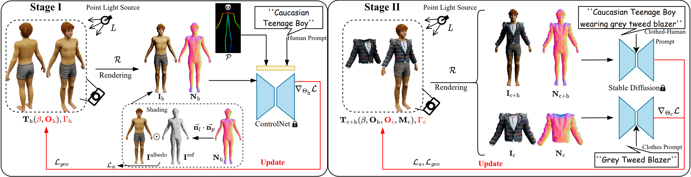

Character Animations
a white teenage boy wearing
Christmas sweater and denim
jeans
a Hispanic man wearing
black sports jersey and blue track pants
a chubby bald old man wearing
denim work shirt and dirty washed jeans
an African-American man wearing
textured white cable-knit sweater and tan chinos
an old lady wearing
long lilac cardigan and taupe shorts
a Caucasian girl with tousled hair wearing
yellow cycling jersey and beige yoga pants
a white teenage boy wearing
red flannel of checker pattern and denim shorts
an African-American woman wearing
navy and beige peplum shirt and beige yoga pants
a Chinese woman with short black hair wearing
jade green blouse with short sleeves and olive green shorts
a Hispanic woman with blonde hair wearing
green flannel shirt of checker pattern and light blue jeans
Text to Clothes Generation
Our pipeline enables generating a diverse range of 3D clothes of different colors, materials, and types.
Text to Human Body Generation
The human body meshes generated by our pipeline are diverse in shapes, haircuts and ethnicities.
Virtual Try-on

Our disentangled human-clothes representation inherently allows us to change the outfit of a certain avatar, or put the same clothes on different avatars.
Demo Video
Framework

Our pipeline has two stages. In Stage I, we generate a base human body model by optimizing its shape parameter and albedo texture. In Stage II, we freeze the human body model and optimize the clothes shape and texture. The rendered RGB images and normal maps of both the clothed human and the clothes are used in computing the SDS losses. For more details, please check out our paper.
Related Links
Our implementation is heavily based on the amazing threestudio, shout out to the contributors!
We'd like to thank the authors of TADA, DreamWaltz, AvatarCLIP and TEXTure for making their code public!
Citation
@misc{wang2023disentangled,
title={Disentangled Clothed Avatar Generation from Text Descriptions},
author={Jionghao Wang and Yuan Liu and Zhiyang Dou and Zhengming Yu and Yongqing Liang and Xin Li and Wenping Wang and Rong Xie and Li Song},
year={2023},
eprint={2312.05295},
archivePrefix={arXiv},
primaryClass={cs.CV}
}